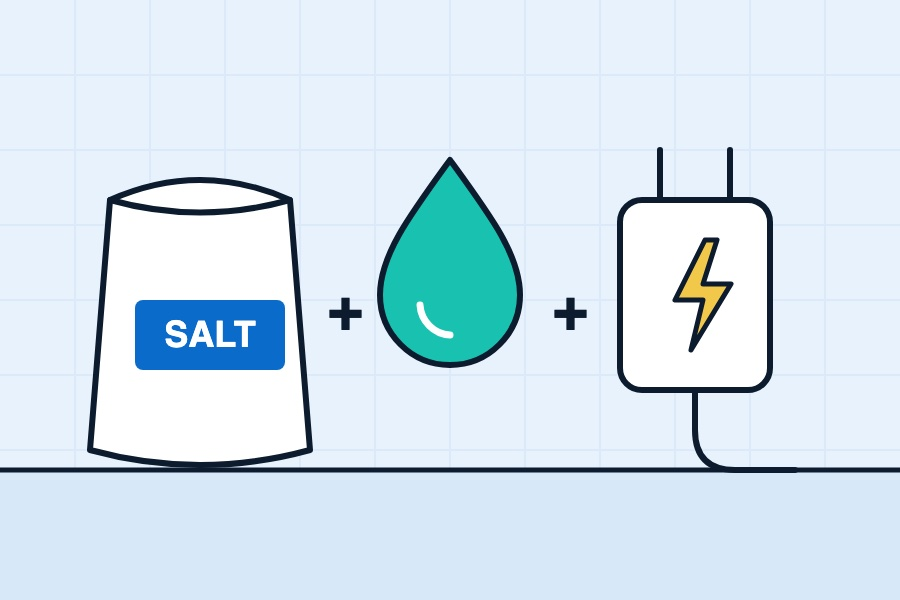

It's one of the first questions people ask once they've decided a softener sounds like a good idea: "Right, but what's it going to cost me every year?" Completely fair. Household bills have had a lot of attention lately, and nobody wants another one that creeps up without them noticing.
We're not going to throw a single number at you, because honestly it varies too much from home to home to be useful. What we can do is explain exactly what goes into the running costs, so you can work out a realistic figure for your own house.
The four running costs
1. Salt
This is usually the biggest one. Every time the softener regenerates, it uses salt to recharge the resin. How much you get through depends on:
- How hard your water is. Harder water means the resin fills up faster, so it regenerates more often.
- How much water you use. A busy family of five gets through far more than a couple who are out at work all day.
- How efficient the softener is. Modern metered units only regenerate when they need to, and many are designed to be thrifty with salt. Older timer-based units regenerate on a schedule whether they need to or not.
- Which salt it uses. Brand-specific block salt and generic tablets are priced differently. Our guide to block salt, tablets and granular explains the difference.
2. Water used during regeneration
When a softener regenerates, it flushes water through the resin and down the drain. If you're on a water meter, that's water you pay for. Efficient modern units tend to use less per regeneration, and metered ones regenerate less often, so this cost varies a lot between models. It's worth asking about when you're choosing a softener.
3. Electricity
Electric softeners use a small amount of power to run the control panel and the valve motor. It's generally a minor part of the running cost. Non-electric softeners use none at all, as they're driven by water pressure.
4. Servicing
We recommend a service once a year to keep the softener working properly and efficiently. A neglected softener can end up wasting salt and water, or not softening at all, which defeats the point. Our guide to how often to service a water softener explains what's involved, and our servicing page covers booking.
The occasional extras
Like any appliance with moving parts, a softener will need the odd part over its life, such as seals or a valve component. Over the long term, the resin itself may eventually need replacing. Regular servicing helps spread these out and catch them early, but it's sensible to know they exist.
How to work out your own costs
If you've already got a softener, the most accurate way is to keep track for a few months:
- Count the salt. Note the date each time you top up and how much you put in. After three months or so, you'll have a good idea of your yearly usage. Multiply that by what you pay per bag or pack.
- Check the water meter if you're on one. Some softeners show how much water they've used regenerating on the display or in the manual's settings menu.
- Add the service. Plus any parts you've needed.
If you're thinking about getting one, ask whoever quotes you to estimate your salt and water use based on your actual water hardness and household. At our free survey we test your water and ask how you use it, so we can size the softener and give you a sensible idea of what to expect.
Ways to keep costs down
- Choose a metered softener. For most households, regenerating based on actual water use is more efficient than a fixed timer.
- Get the size right. Too small and it regenerates constantly. Too big and you've spent more upfront than you needed to. We size each one to your household and water.
- Keep the settings right. If the hardness setting is higher than it needs to be, you'll use more salt than necessary. If your household changes, the settings may need adjusting too.
- Buy salt sensibly. Buying in bigger quantities, or having it delivered, can work out cheaper per bag. Just store it somewhere dry.
- Use the right salt. Cheap, impure salt leaves more sludge in the tank, which can mean more cleaning and more problems.
- Don't skip the service. A softener with a clogged injector or wrong settings can waste salt and water without you noticing.
What about the savings side?
We're wary of anyone who claims a softener "pays for itself" with precise figures, because it depends so much on the house and the household. But there are real day-to-day differences people notice. You'll typically need less soap, shampoo and washing detergent in soft water. You'll buy less descaler and fewer limescale cleaning products. And with no new scale forming, your boiler, hot water cylinder, shower and appliances are protected from the build-up described in our post on limescale and your boiler.
Whether that balances out the running costs for you is a personal call. If budget's the main concern, it's worth reading our fair comparison of water softeners and scale reducers. Scale reducers generally cost less to run, but they work differently and don't give you the same results.
If you'd like a proper idea of what a softener would look like for your home, our installation page explains the survey, the options and how we quote.
Quick answers
What is the biggest running cost of a water softener?
Usually salt. How much you use depends on your water hardness, how much water your household uses and how efficient your softener is.
Do water softeners use a lot of electricity?
Electric softeners use a small amount of power for the control panel and valve. Non-electric softeners don't use any.
Do water softeners waste water?
They use some water each time they regenerate. Modern metered softeners regenerate only when needed and tend to use less, so efficiency varies a lot between models.
Want a hand with your water?
Book a free survey and water test. We'll tell you straight whether a softener's worth it for your home.
Get a free quote